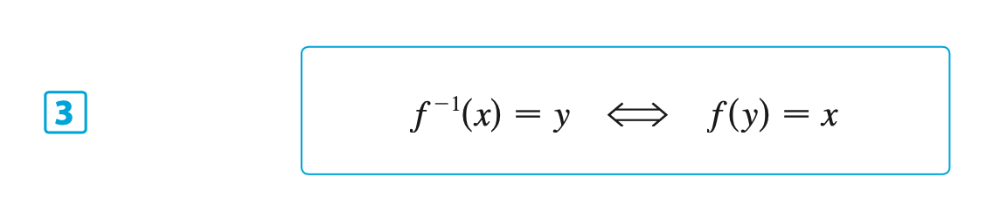
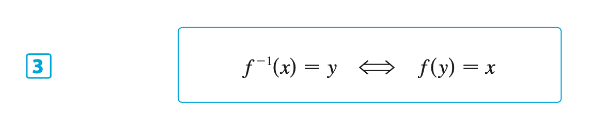
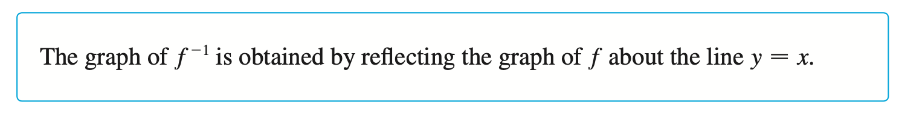
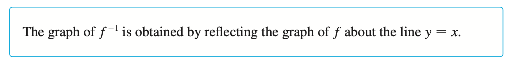
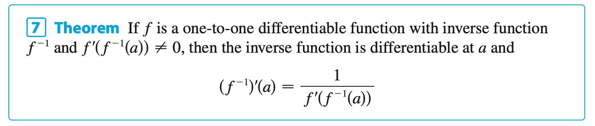
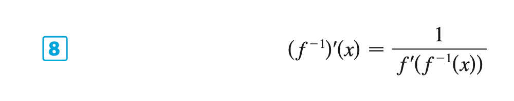
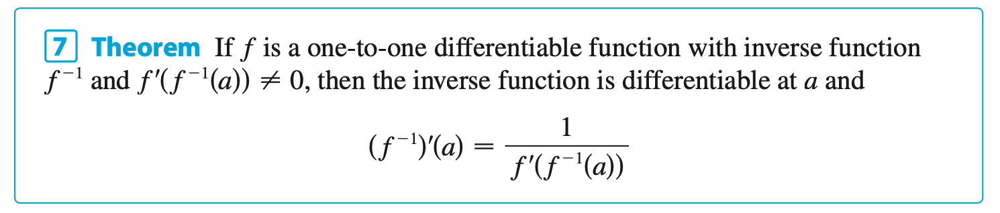
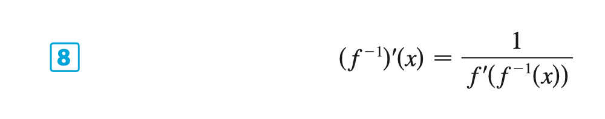

Chapter 6 | Inverse Functions
§6.1 | Inverse Functions
§6.2 | Exponential Functions and their Derivatives
§6.3 | Logarithmic Functions
Other Formulas
Change of Base Formula

Change of Base Formula
Change of Base Formula
Other Formulas
Change of Base Formula
Change of Base Formula
Change of Base Formula
§6.4 | Derivatives of Logarithmic Functions
§6.5 | Exponential Growth and Decay
§6.6 | Inverse Trigonometric Functions
§6.7 | Hyperbolic Functions
§6.8 | Indeterminate Forms and the L'Hopital's Rule


 

 

 


